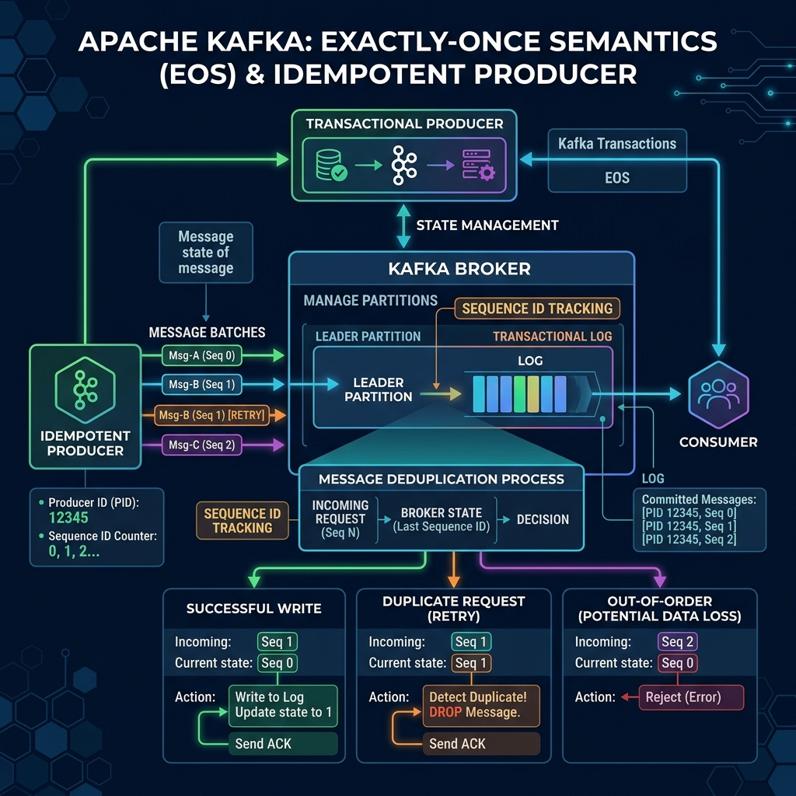

In messaging systems, network glitches happen. If a producer sends a message to Kafka, the broker writes it, but the acknowledgment fails due to a network drop, the producer will assume the message was lost and retry. This results in duplicate messages in your topic.
Duplicate messages can break business logic (such as charging a customer twice for an order). To fix this, Kafka introduces the Idempotent Producer, a native way to ensure that retried messages do not create duplicates.

Imagine telling a barista, "I'd like a hot latte, please."
If you don't hear a reply due to background noise (network drop), you might repeat, "I'd like a hot latte, please." If the barista treats these as two separate requests, they will make two lattes and charge you twice.
An idempotent system is like assigning an order slip number. When you order, you hand them order ticket #1. If you repeat yourself, "Here is ticket #1: hot latte," the barista checks their rack, sees they already processed ticket #1, and says, "Yep, I'm working on it," without making a duplicate latte.
How Idempotence Works Under the Hood
When you enable idempotence on a Kafka Producer, the broker assigns two pieces of metadata to each send request:
- PID (Producer ID): A unique ID representing the producer session, assigned automatically by the broker during initialization.
- Sequence Number: A sequential integer assigned to each message batch within a partition, starting at 0.
When a producer sends a batch, the broker checks the sequence number. If it receives a sequence number it has already written for that PID and partition, it rejects the write but reports success back to the producer. This silently removes duplicate messages at the broker level.
Enabling Idempotency in Java
In modern Kafka versions (since 3.0), the idempotent producer is enabled by default. If you are using an older version or want to declare it explicitly, use the following configuration:
Properties props = new Properties();
props.put("bootstrap.servers", "localhost:9092");
props.put("key.serializer", "org.apache.kafka.common.serialization.StringSerializer");
props.put("value.serializer", "org.apache.kafka.common.serialization.StringSerializer");
// Enable Idempotence
props.put("enable.idempotence", "true");
// When enable.idempotence=true, Kafka automatically enforces:
// 1. acks = all
// 2. retries = Integer.MAX_VALUE
// 3. max.in.flight.requests.per.connection <= 5 (preserving order)
KafkaProducer producer = new KafkaProducer<>(props); Achieving Exactly-Once Semantics (EOS)
The idempotent producer handles deduplication between a single producer and a partition. To achieve Exactly-Once Semantics (EOS) across a complete data pipeline (read-process-write), Kafka combines idempotence with two other concepts:
- Transactional Producer: Allows you to write to multiple partitions atomically. Either all messages are written successfully, or none are.
- read_committed Isolation: Consumers can be configured with
isolation.level = read_committed, ensuring they skip messages from aborted transactions.
Conclusion
Duplicate records can corrupt database registers and break transaction models. By enabling the Idempotent Producer, you ensure that network-based retries do not duplicate records on brokers, laying the foundation for true Exactly-Once processing pipelines.